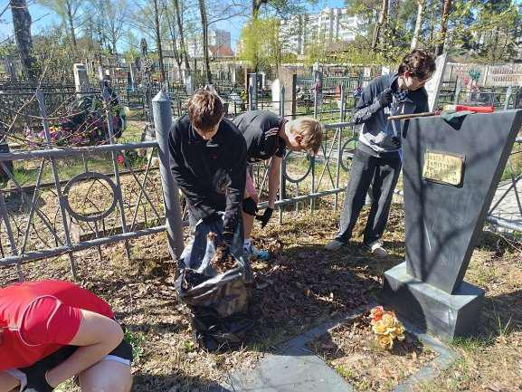
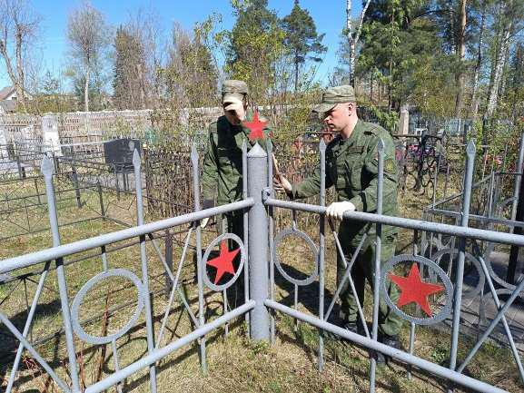
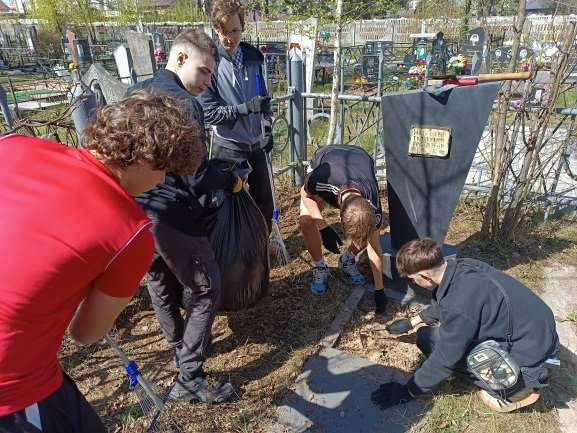
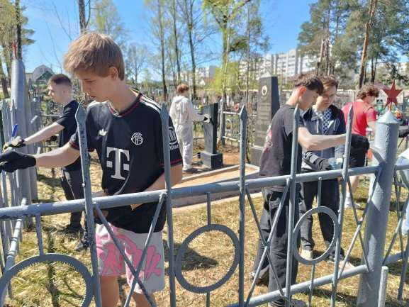
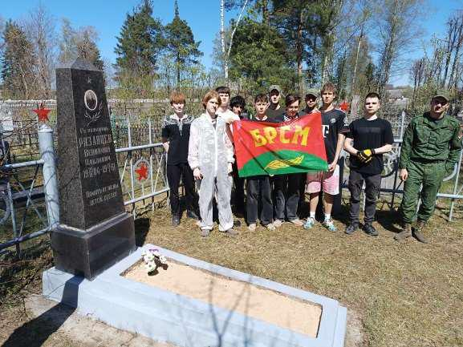

«ПАМЯТЬ СОХРАНИМ!»
2 мая, накануне Великой Победы, традиционно учащиеся 9-11-х классов гимназии провели волонтерскую акцию «Память сохраним!».

Поддержали акцию и приняли участие в облагораживании могилы ветерана Великой Отечественной войны, похороненного на городском кладбище Борисова, военнослужащие 7 инженерного полка.

Перед проведением акции руководитель по военно-патриотическому воспитанию подполковник запаса Юрий Евсеенко рассказал ребятам и военнослужащим полка биографию ветерана. Будучи несовершеннолетним, в 1920 году Вениамин Павлович Рязанцев вступил в ряды рабочекрестьянской Красной армии. В последующем, поступив и окончив Одесскую артиллерийскую школу, Вениамин Павлович начал свою карьеру профессионального военного. За его плечами участие в боевых действиях на озере Хасан, участие в обороне Сталинграда, Курской битве, КорсуньШевченковской, Пражской и Берлинской операциях. За годы войны полковник Рязанцев дважды был ранен и вновь становился в строй. Заслуги Вениамина Павловича перед Родиной были отмечены тремя орденами Красного Знамени, орденами Ленина и Богдана Хмельницкого III степени. Среди множества медалей ветерана важно выделить те, которые наиболее ярко раскрывают его боевой путь: «За оборону Сталинграда», «За победу над Германией в ВОВ 1941-1945 гг.» «За взятие Берлина», «За освобождение Праги». В честь героических заслуг воинов-танкистов, воевавших под началом полковника Рязанцева, на въезде в поселок Зимовники Ростовской области установлен мемориал «Памятник воинам – освободителям рабочего поселка Зимовники» в виде танка Т-34-85.


Участники акции убрали опавшую листву, вырезали поросль, окрасили памятник и ограду. Могилу ветерана украсили цветы.
